Доступно
Скачать Zephyron
Выбери своё устройство. Остальное уже знакомо.
Готовится
macOS

Публичная версия готовитсяДоступно
Android
ZephyronПривет. Ты здесь?Всегда на связи.
Концепт интерфейсаВыбирай платформу или листай карточки.
Выбери своё устройство. Остальное уже знакомо.

Публичная версия готовитсяВыбирай платформу или листай карточки.